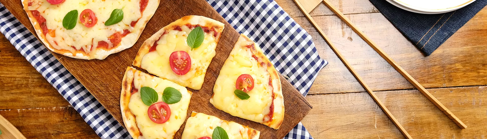

Pizza de Frigigeira

Pizza Rápida de Frigideira
Outro prato de origem italiana, de preparo simples e rápido, que vai bem tanto em momentos festivos, quanto em momentos mais íntimos, acompanhada por vinho ou refrigerantes.
A pizza aceita as mais criativas e variadas coberturas e é tão versátil que criou um nicho de mercado exclusivo para ela, as "pizzarias", com muito sucesso, em todo o mundo.
Ingredientes
- 2 xícaras (chá) de farinha de trigo
- 1 colher de fermento químico, em pó
- 1 pitada de sal
- 1 xícara (chá) de água
- 1 fio de azeite extra-virgem
Preparo
- Misture bem a farinha, o femento, o sal, o azeite e a água. Divida a massa em porções menores. Deixe descansar por 10 minutos.
- Abra a massa e coloque em uma frigideira quente. Deixe dourar de um lado e vire a massa para dourar do outro lado. Espalhe a cobertura, e deixe derreter.
Cobertura (recheio) Sugerida
- molho de tomate
- muçarela ralada
- tomates cereja
- folhas de manjericão